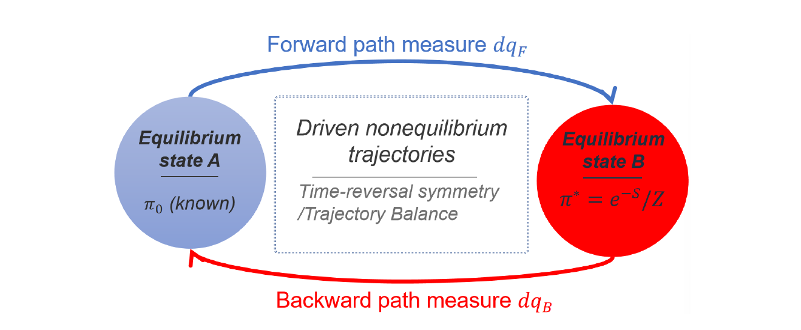
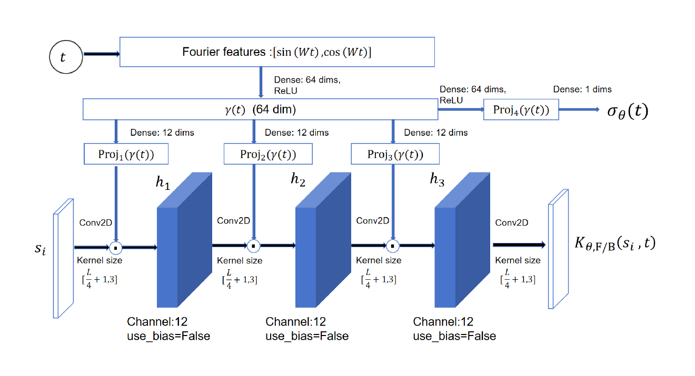
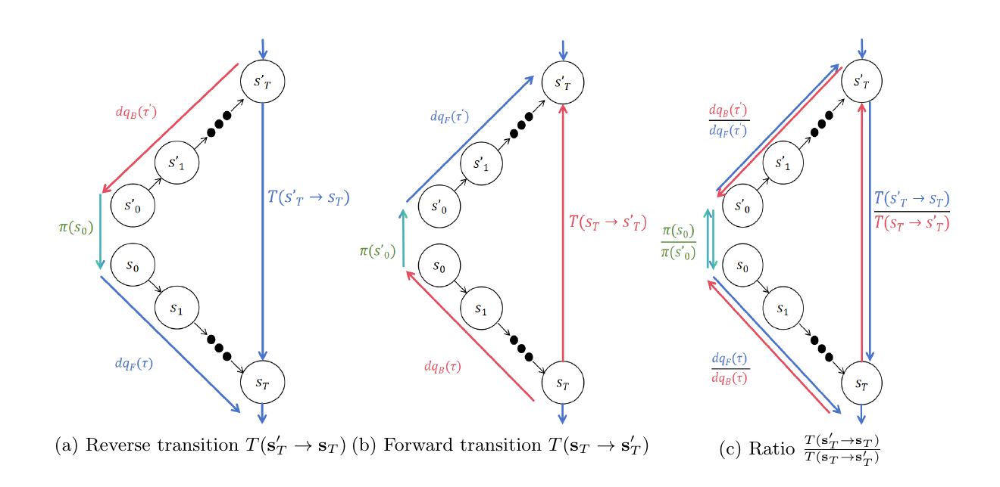
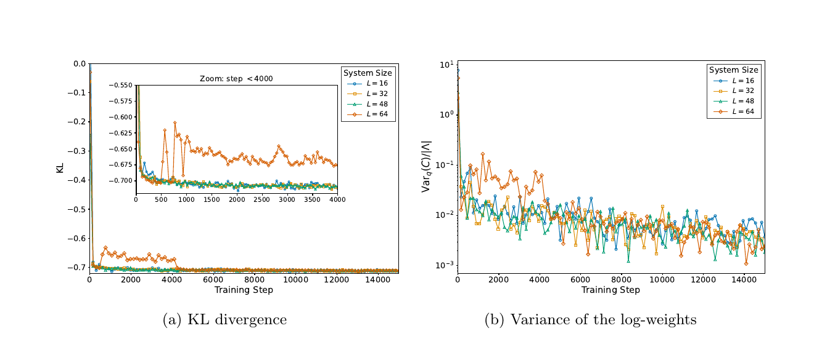
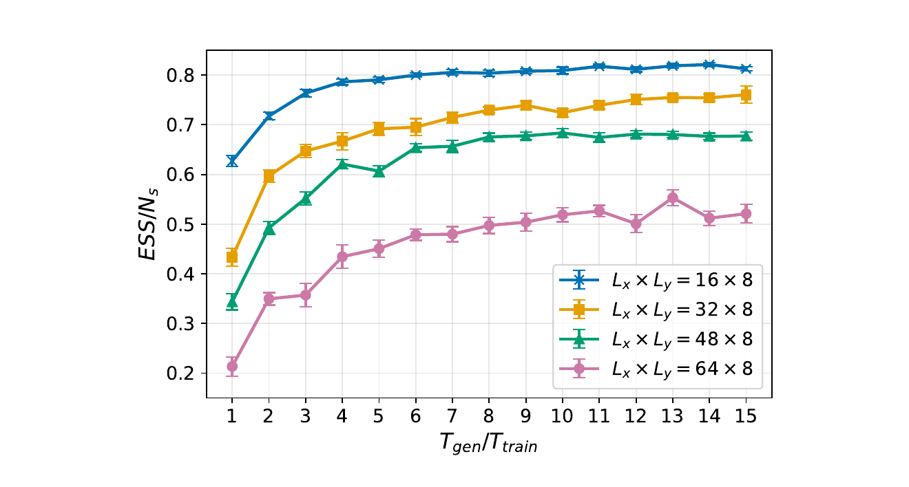
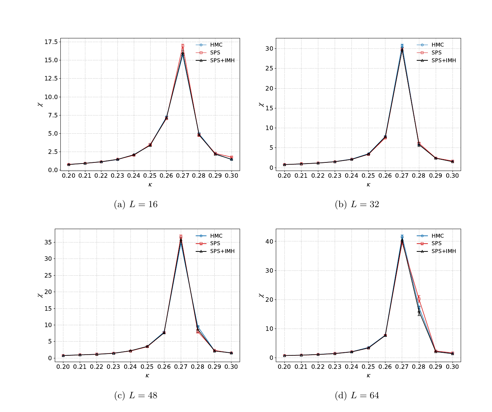
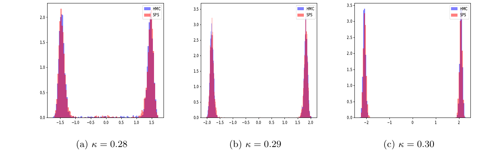
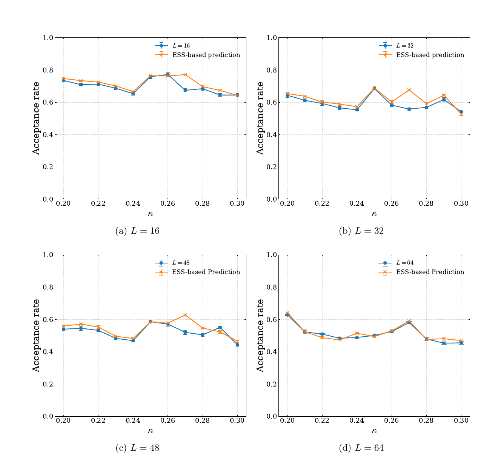
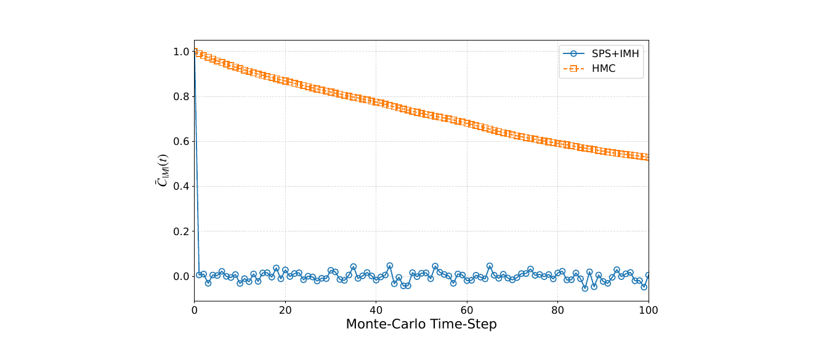

训练 250 步，采样 2500 步：权重方差随采样步数下降的随机路径采样器Train with 250 steps, sample with 2500: a stochastic path sampler whose weight variance falls with finer sampling steps
格点场论的采样只知道作用量 $S$，不知道归一化常数，也没有现成的样本。我们的随机路径采样器（SPS，arXiv:2606.13790）从高斯噪声出发，学习一对正向和反向的 Langevin 过程，训练目标是把两者之间的熵产生压到最小；过程越接近可逆，正向走到的终点就越接近目标分布。剩下的偏差由整条路径上的一步 Metropolis 修正。整个过程只用到作用量，不需要任何训练样本。在文章模拟的格点上，它没有出现流模型常见的模式坍缩；而且因为时间是连续输入，训练好的模型在采样时可以换成更细的步长，权重方差随之下降，直到一个由体积决定的下限。路径权重的方差有两个来源：时间离散带来的误差，可以在采样时把步子走细来消除；学到的过程本身离可逆还差多少，决定了那个下限，只能靠更好的训练或推得更慢来降低。
Sampling in lattice field theory starts from the action $S$ alone: no normalization constant, no ready-made samples. Our Stochastic Path Sampler (SPS, arXiv:2606.13790) starts from Gaussian noise and learns a pair of forward and backward Langevin processes, trained to minimize the entropy production between them; the closer the process is to reversible, the closer the forward endpoint is to the target distribution. What remains is corrected by one Metropolis step on the whole path. Only the action is used—no training samples at all. On the lattices simulated in the paper it shows none of the mode collapse common for flows; and because time is a continuous input, a trained model can sample with a finer step, which lowers the weight variance down to a floor set by the volume. The variance of the path weights has two sources: the error of discretizing time, which finer steps at sampling time remove; and how far the learned process itself is from reversible, which sets the floor and can be lowered only by better training or a slower push.
1 问题：只有作用量，没有样本1 The problem: an action, but no samples
格点场论把量子场放在有限的格点上，物理量是对 $e^{-S(\phi)}$ 加权的平均。标准做法是用混合蒙特卡洛（HMC）构造一条马尔可夫链。它在大部分参数下工作得很好，但有两个老毛病：接近相变点时，关联长度变长，链的自相关时间随之暴涨，这是临界慢化（Hohenberg & Halperin 1977；Schaefer, Sommer & Virotta 2011）；在规范理论里，拓扑荷几乎不再在扇区之间变化，这是拓扑冻结（Allés 等 1996）。
生成模型提供了另一条路：直接学一个能一次性产生构型的分布 $q_\theta$，再用重加权或 Metropolis 修正把它变成精确的采样。在没有训练样本的情况下，最常见的做法是训练归一化流（Albergo, Kanwar & Shanahan 2019），目标是反向 KL 散度
$$D_{\rm KL}(q_\theta\Vert p)=\mathbb E_{q_\theta}\big[\log q_\theta(\phi)+S(\phi)\big]+\log Z .$$
它只需要作用量，因为期望是在模型自己的样本上取的。但这也带来一个代价：$q_\theta$ 在目标几乎为零的地方放了概率，会被重重惩罚；而漏掉目标的一个峰，几乎不受惩罚。所以反向 KL 倾向于"抓住一个峰"。$\phi^4$ 理论进入破缺相后，平均场有正负两个峰，流模型可能只学到其中一个。这就是模式坍缩：即使后面加上重加权或 Metropolis 修正，漏掉的那个峰也几乎采不到，结果带有偏差，而且格点越大越严重（Nicoli 等 2023）。从单峰的高斯出发、用连续可逆映射去覆盖两个分开的峰，本身也不容易，这会让问题更严重。
SPS 换了一个角度。它不学一个单一的映射，而是学一条带噪声的随机路径：正向过程从高斯噪声走到目标，反向过程从目标走回高斯，训练让两者尽量互为时间反演。需要说明的是，SPS 优化的同样是在模型自己的路径上取期望的 KL，所以它并不能从构造上保证不坍缩；不同之处在于路径的每一步都有噪声，反向过程也是学出来的。在文章模拟的格点尺寸上，我们没有看到模式坍缩：临界附近的磁化直方图里，正负两个扇区都有样本（文章附录 C）。
下面先讲这件事背后的物理：为什么"让过程可逆"就等于"采到目标分布"。
Lattice field theory puts a quantum field on a finite lattice, and observables are averages weighted by $e^{-S(\phi)}$. The standard approach builds a Markov chain with Hybrid Monte Carlo (HMC). It works well for most parameters but has two old problems: near a phase transition the correlation length grows and the autocorrelation time of the chain shoots up—critical slowing down (Hohenberg & Halperin 1977; Schaefer, Sommer & Virotta 2011); in gauge theories the topological charge almost stops moving between sectors—topological freezing (Allés et al. 1996).
Generative models offer another route: learn a distribution $q_\theta$ that produces configurations in one shot, and turn it into exact sampling with reweighting or a Metropolis correction. Without training samples, the most common choice is a normalizing flow (Albergo, Kanwar & Shanahan 2019) trained on the reverse KL divergence
$$D_{\rm KL}(q_\theta\Vert p)=\mathbb E_{q_\theta}\big[\log q_\theta(\phi)+S(\phi)\big]+\log Z .$$
It needs only the action, because the expectation is taken over the model's own samples. That comes at a price: $q_\theta$ is penalized heavily for putting probability where the target is nearly zero, but hardly at all for missing a peak of the target. The reverse KL therefore tends to "grab one peak". In the broken phase of $\phi^4$ theory the mean field has two peaks, positive and negative, and a flow may learn only one of them. This is mode collapse: even with reweighting or a Metropolis correction, the missing peak is almost never sampled, the result is biased, and the bias grows with lattice size (Nicoli et al. 2023). Covering two separated peaks with a continuous invertible map from a single Gaussian peak is hard in itself, which makes the problem worse.
SPS takes a different angle. Instead of a single map it learns a noisy stochastic path: a forward process walks from Gaussian noise to the target, a backward process walks from the target back to the Gaussian, and training makes the two as close to time reverses of each other as possible. SPS also optimizes a KL whose expectation is over the model's own paths, so it is not protected from collapse by construction; the difference is that every step of the path is noisy and the backward process is learned too. For the lattice sizes simulated in the paper we saw no mode collapse: near criticality the magnetization histograms populate both the positive and the negative sector (Appendix C of the paper).
Next, the physics behind this: why "making the process reversible" means "sampling the target".
2 路径上的熵产生2 Entropy production on paths
把采样看成一次把系统从状态 A 推到状态 B 的非平衡过程。A 是容易采样的高斯分布 $\pi_0$，B 是目标 $\pi^*\propto e^{-S}$。正向过程从 A 出发走到 B，给每条路径 $\tau=(s_0,s_1,\dots,s_T)$ 一个概率 $q_F(\tau)$；反向过程从 B 出发走回 A，给同一条路径另一个概率 $q_B(\tau)$（图 1）。
如果过程推得足够慢，每一步系统都来得及跟上，正向和反向走出来的路径就没有区别，过程是可逆的。推得快了，两者就会不同。随机热力学用路径上的熵产生来量度这种不同（Seifert 2012）：
$$\Sigma(\tau)=\sum_{i=0}^{T-1}\log\frac{q_F(s_{i+1}\mid s_i)}{q_B(s_i\mid s_{i+1})}+\log\frac{\pi_0(s_0)}{\tilde\pi^*(s_T)} .$$
它在正向路径上的平均，就是正反路径分布之间的 KL 散度，再减去一个与路径无关的常数 $\log Z$。Clausius 不等式在这里的样子是：平均熵产生不小于 $-\log Z$，只有过程完全可逆时才取等号。这时每条路径的 $\Sigma$ 都等于同一个常数，正向终点的分布就恰好是 $\pi^*$。这也正是 Jarzynski 等式（Jarzynski 1997）和 Crooks 关系（Crooks 1999）所描述的：$e^{-\Sigma}$ 是把正向路径改写成反向路径所需的权重，它的平均给出 $Z$。
所以，"采到目标分布"可以换一个说法："让正向和反向过程互为时间反演"。下面的演示可以直接看到这件事：一维双势阱上的退火 Langevin 过程，拖动滑块改变"推得快慢"，也就是总步数。步数越多，正向终点越接近目标，熵产生越小，它的涨落也越小。
Think of sampling as a nonequilibrium process that pushes a system from state A to state B. A is an easy Gaussian $\pi_0$, B is the target $\pi^*\propto e^{-S}$. A forward process walks from A to B and gives every path $\tau=(s_0,s_1,\dots,s_T)$ a probability $q_F(\tau)$; a backward process walks from B back to A and gives the same path another probability $q_B(\tau)$ (Fig. 1).
If the push is slow enough that the system keeps up at every step, forward and backward paths look the same and the process is reversible. Push faster and they differ. Stochastic thermodynamics measures the difference by the entropy production on the path (Seifert 2012):
$$\Sigma(\tau)=\sum_{i=0}^{T-1}\log\frac{q_F(s_{i+1}\mid s_i)}{q_B(s_i\mid s_{i+1})}+\log\frac{\pi_0(s_0)}{\tilde\pi^*(s_T)} .$$
Its average over forward paths is the KL divergence between forward and backward path distributions, minus a path-independent constant $\log Z$. The Clausius inequality here reads: the mean entropy production is at least $-\log Z$, with equality only for a fully reversible process. Then every path has the same $\Sigma$, and the forward endpoints follow $\pi^*$ exactly. This is what the Jarzynski equality (Jarzynski 1997) and the Crooks relation (Crooks 1999) describe: $e^{-\Sigma}$ is the weight that turns forward paths into backward ones, and its mean gives $Z$.
So "sampling the target" can be restated as "making the forward and backward processes time reverses of each other". The demo below shows this directly: an annealed Langevin process on a one-dimensional double well, with a slider for how fast it is pushed—the total number of steps. More steps bring the forward endpoints closer to the target and make the entropy production and its fluctuations smaller.

正向过程把高斯分布（状态 A）推到目标分布（状态 B），反向过程从 B 走回 A。SPS 训练的目标是让两者在整条路径上互为时间反演。
The forward process pushes the Gaussian (state A) to the target (state B); the backward process walks from B back to A. SPS is trained to make the two time reverses of each other over the whole path.
一维目标 $\tilde\pi^*(x)=e^{-b(x^2-1)^2}$，从标准高斯出发，用 $T$ 步退火 Langevin 过程推向目标（步数越多，总演化时间越长、每步越细），反向核取同样形式。左：2000 条正向路径终点的直方图与目标密度（实线）。右：熵产生 $\Sigma$ 的直方图；读数给出平均熵产生超出 $-\log Z$ 的部分，也就是正反路径分布之间的 KL，以及 ESS 比例。增加 $T$，终点直方图贴近目标，$\Sigma$ 的分布收窄并向 $-\log Z$（虚线）靠拢。
One-dimensional target $\tilde\pi^*(x)=e^{-b(x^2-1)^2}$, pushed from a standard Gaussian by $T$ steps of annealed Langevin dynamics (more steps mean a longer total time and finer steps), with a backward kernel of the same form. Left: histogram of 2000 forward endpoints against the target density (solid). Right: histogram of the entropy production $\Sigma$; the readout gives how far the mean exceeds $-\log Z$—the KL between forward and backward path distributions—and the ESS fraction. As $T$ grows, the endpoint histogram approaches the target and the distribution of $\Sigma$ narrows towards $-\log Z$ (dashed).
3 SPS 怎么做3 How SPS works
SPS 把上一节的正向和反向过程都交给神经网络。时间区间 $[0,1]$ 分成 $T$ 步，$\Delta t=1/T$，正向和反向各走一步是
$$\begin{aligned}s_{i+1}&=s_i+\sigma_\theta^2(t_i)K_{\theta,F}(s_i,t_i)\Delta t+\sigma_\theta(t_i)\sqrt{\Delta t}\,\xi_i,\\ s_i&=s_{i+1}+\sigma_\theta^2(t_i)K_{\theta,B}(s_{i+1},t_i)\Delta t+\sigma_\theta(t_i)\sqrt{\Delta t}\,\eta_{i+1} .\end{aligned}$$
如果把正向漂移 $K_{\theta,F}$ 换成 $-\nabla S$，这就是随机量子化里的 Langevin 方程；SPS 让一个网络去学它，另一个网络学反向漂移 $K_{\theta,B}$，第三个小网络学扩散系数 $\sigma_\theta(t)$。时间通过傅里叶特征作为连续变量输入网络，网络主体是带周期边界的卷积（图 3）。中间各步的分布没有事先指定，由学到的动力学自己决定。
训练目标就是上一节的平均熵产生，也就是正向路径分布与未归一化反向路径分布之间的 KL：
$$\mathcal L=\mathbb E_{q_F}\Big[\log\frac{dq_F(\tau)}{d\tilde q_B(\tau)}\Big],\qquad d\tilde q_B(\tau)=\tilde\pi^*(s_T)\prod_i q_B(s_i\mid s_{i+1})\,d\tau .$$
它只需要作用量 $S$，期望在模型自己生成的路径上取，所以完全不需要训练数据。每个耦合和格点尺寸单独训练一个模型。
训练总会留下一些偏差：网络容量有限，训练时间有限，离散化也有误差。为了得到精确的采样，SPS 把整条路径当作一个提议，做一步独立 Metropolis–Hastings（IMH）：新路径以 $\min\{1,w(\tau')/w(\tau)\}$ 被接受，其中 $w=e^{-\Sigma}$ 就是上一节的路径权重（图 4）。这样得到的马尔可夫链严格以 $\pi^*$ 为平稳分布。
SPS hands both the forward and the backward process of the previous section to neural networks. The time interval $[0,1]$ is split into $T$ steps, $\Delta t=1/T$, and one forward and one backward step are
$$\begin{aligned}s_{i+1}&=s_i+\sigma_\theta^2(t_i)K_{\theta,F}(s_i,t_i)\Delta t+\sigma_\theta(t_i)\sqrt{\Delta t}\,\xi_i,\\ s_i&=s_{i+1}+\sigma_\theta^2(t_i)K_{\theta,B}(s_{i+1},t_i)\Delta t+\sigma_\theta(t_i)\sqrt{\Delta t}\,\eta_{i+1} .\end{aligned}$$
With the forward drift $K_{\theta,F}$ replaced by $-\nabla S$, this is the Langevin equation of stochastic quantization; SPS lets one network learn it, another the backward drift $K_{\theta,B}$, and a third small network the diffusion coefficient $\sigma_\theta(t)$. Time enters as a continuous variable through Fourier features, and the body of the network is a set of periodic convolutions (Fig. 3). The intermediate distributions are not prescribed; the learned dynamics decides them.
The training objective is the mean entropy production of the previous section, i.e. the KL between the forward path distribution and the unnormalized backward one:
$$\mathcal L=\mathbb E_{q_F}\Big[\log\frac{dq_F(\tau)}{d\tilde q_B(\tau)}\Big],\qquad d\tilde q_B(\tau)=\tilde\pi^*(s_T)\prod_i q_B(s_i\mid s_{i+1})\,d\tau .$$
It needs only the action $S$, and the expectation is over paths the model generates itself, so no training data are needed. One model is trained for each coupling and lattice size.
Training always leaves some error: finite capacity, finite training time, discretization. To make the sampling exact, SPS treats a whole path as one proposal in an independence Metropolis–Hastings (IMH) step: a new path is accepted with $\min\{1,w(\tau')/w(\tau)\}$, where $w=e^{-\Sigma}$ is the path weight of the previous section (Fig. 4). The resulting Markov chain has $\pi^*$ as its exact stationary distribution.

时间经傅里叶特征嵌入后，分别投影到各个卷积层；同一结构用于正向和反向漂移，另一个小网络从时间嵌入给出扩散系数 $\sigma_\theta(t)$。
Time is embedded with Fourier features and projected into every convolution layer; the same structure serves the forward and the backward drift, and a small network maps the time embedding to the diffusion coefficient $\sigma_\theta(t)$.

接受率比较的是新旧两条完整路径：一条从新终点沿反向过程走回去，一条从旧终点沿正向过程走过来，二者概率之比给出接受率。
The acceptance compares two complete paths: one walking back from the new endpoint along the backward process and one walking forward to the old endpoint; the ratio of their probabilities gives the acceptance.
4 权重方差的去向4 Where the weight variance goes
IMH 能不能用，取决于路径权重 $w$ 有多整齐。权重越参差，ESS 越小，IMH 的接受率也越低。两者都由同一个量决定：对数权重的方差 $\operatorname{Var}(\log w)$。
它随体积线性增长。每个格点都贡献一份失配，所以 $\operatorname{Var}(\log w)\approx a|\Lambda|$。训练过程中，不同格点尺寸上每格点的方差收敛到相近的值（图 5 右）。
ESS 和 IMH 接受率对它的反应不一样。对数权重近似高斯时，
$$\frac{\rm ESS}{N}\approx e^{-\operatorname{Var}(\log w)},\qquad \langle A\rangle\approx\operatorname{erfc}\Big(\tfrac12\sqrt{\operatorname{Var}(\log w)}\Big).$$
第二式和 HMC 接受率的经典公式形式相同（Gupta, Kilcup & Sharpe 1988）。方差小时，ESS 的亏损随体积线性增长，接受率的亏损只按体积的平方根增长；方差大时，两者都随体积指数下降，但接受率指数里的系数只有 ESS 的四分之一。所以在我们研究的格点上，ESS 已经明显下降，IMH 仍然接受得很顺。下面的滑块固定每格点的 $a$，改变体积。
Whether IMH works depends on how uniform the path weights $w$ are. The more they spread, the smaller the ESS and the lower the IMH acceptance. Both are set by one quantity: the variance of the log weights, $\operatorname{Var}(\log w)$.
It grows linearly with volume. Every site contributes some mismatch, so $\operatorname{Var}(\log w)\approx a|\Lambda|$. During training, the per-site variance converges to similar values on different lattice sizes (Fig. 5, right).
ESS and IMH acceptance respond to it differently. For approximately Gaussian log weights,
$$\frac{\rm ESS}{N}\approx e^{-\operatorname{Var}(\log w)},\qquad \langle A\rangle\approx\operatorname{erfc}\Big(\tfrac12\sqrt{\operatorname{Var}(\log w)}\Big).$$
The second has the form of the classic HMC acceptance formula (Gupta, Kilcup & Sharpe 1988). For small variance the ESS deficit grows linearly with volume while the acceptance deficit grows only as its square root; for large variance both fall exponentially with volume, but the coefficient in the exponent of the acceptance is a quarter of that of the ESS. So on the lattices we studied, the ESS has dropped visibly while IMH still accepts readily. The slider below fixes the per-site $a$ and changes the volume.

$\kappa=0.27$，$L=16$–$64$。左：路径 KL 随训练步数下降；右：每格点的对数权重方差，不同格点尺寸收敛到相近的值。
$\kappa=0.27$, $L=16$–$64$. Left: the path KL falls with training steps; right: the per-site variance of the log weights converges to similar values on different lattice sizes.
两条曲线都只依赖 $a|\Lambda|$：灰线为 $e^{-a|\Lambda|}$，蓝线为 $\operatorname{erfc}(\tfrac12\sqrt{a|\Lambda|})$。滑块的初值 $a=1.1\times10^{-3}$ 是原文附录 D 对 ESS 随体积变化的拟合值，竖线是当前体积；原文的四个格点 $16\times8$ 到 $64\times8$ 对应 $|\Lambda|=128$ 到 $512$。
Both curves depend only on $a|\Lambda|$: grey $e^{-a|\Lambda|}$, blue $\operatorname{erfc}(\tfrac12\sqrt{a|\Lambda|})$. The initial $a=1.1\times10^{-3}$ is the fit of the ESS versus volume in Appendix D of the paper, and the vertical line marks the current volume; the four lattices of the paper, $16\times8$ to $64\times8$, correspond to $|\Lambda|=128$ to $512$.
权重方差的两个来源。对数权重的方差一部分来自时间离散：每一步都用有限的 $\Delta t$ 近似连续的随机过程，带来误差；另一部分来自学到的连续过程本身离可逆还差多少。第 2 节的演示把两者混在一起：步数越多，每步越细，总演化时间也越长。SPS 可以把它们分开。
时间是连续输入，所以可以在采样时加密步数。网络学到的是 $K_\theta(s,t)$ 和 $\sigma_\theta(t)$ 这样的连续时间函数，训练时用 $T_{\rm train}=250$ 步，采样时完全可以换成更多的步，不需要重新训练。按训练步数生成的路径仍带着不可忽略的有限步长误差；采样时用更细的时间离散，这部分误差就会减小，ESS 迅速上升，然后饱和在一个由体积决定的值（图 7）。饱和之后剩下的是学到的过程本身离可逆的距离，加密步数已经无能为力，要靠更好的训练或推得更慢来降低。原文的结果都用 $T_{\rm gen}=2500$。
Two sources of weight variance. Part of the log-weight variance comes from discretizing time: every step approximates a continuous stochastic process with a finite $\Delta t$. The other part comes from how far the learned continuous process itself is from reversible. The demo of Section 2 mixes the two: more steps are finer and also make the total evolution time longer. SPS can separate them.
Time is a continuous input, so steps can be refined at sampling time. The networks learn continuous-time functions $K_\theta(s,t)$ and $\sigma_\theta(t)$; trained with $T_{\rm train}=250$ steps, they can sample with more steps without retraining. Paths generated with the training step count still carry a non-negligible finite-step error; a finer time grid at sampling time reduces it, the ESS rises quickly and then saturates at a value set by the volume (Fig. 7). What remains after saturation is how far the learned process itself is from reversible; finer steps no longer help, and only better training or a slower push can lower it. All results of the paper use $T_{\rm gen}=2500$.

$\kappa=0.27$，横轴为采样步数与训练步数之比 $T_{\rm gen}/T_{\rm train}$。四个格点上 ESS 都先迅速上升再饱和，格点越大饱和值越低。
$\kappa=0.27$; the horizontal axis is the ratio of sampling to training steps, $T_{\rm gen}/T_{\rm train}$. On all four lattices the ESS first rises quickly and then saturates, lower for larger lattices.
5 二维 φ⁴ 上的结果5 Results in 2D φ⁴
试验场是 $L\times8$ 格点上的二维 $\phi^4$ 理论，$L=16$、32、48、64，第二个方向固定为 8，可以看成有限温度的格点；$\lambda=0.022$，$\kappa$ 从 $0.20$ 扫到 $0.30$。在这种格点上，磁化率在 $\kappa\approx0.27$ 附近出现峰值，我们称之为赝临界区。参考值来自长的 HMC 链。
物理量。平均磁化强度和自由能密度，SPS 未修正的提议与 HMC 在所有耦合和格点上基本重合。磁化率对分布的尾部更敏感：$\kappa\gtrsim0.27$ 时，未修正的提议明显偏离 HMC，原因是最后一步的扩散系数不为零，提议会多跑到一些作用量较高的构型上；加上 IMH 修正后，所有耦合和格点都回到 HMC 的值（图 8）。
The test bed is 2D $\phi^4$ theory on $L\times8$ lattices, $L=16$, 32, 48, 64, with the second direction fixed at 8—a finite-temperature lattice; $\lambda=0.022$ and $\kappa$ scans from $0.20$ to $0.30$. On these lattices the susceptibility peaks near $\kappa\approx0.27$, which we call the pseudocritical region. References come from long HMC chains.
Observables. For the absolute magnetization and the free-energy density, the uncorrected SPS proposals essentially coincide with HMC at all couplings and lattice sizes. The susceptibility is more sensitive to the tails of the distribution: for $\kappa\gtrsim0.27$ the uncorrected proposals deviate clearly from HMC, because the diffusion coefficient at the last step is nonzero and the proposals visit somewhat more high-action configurations; with the IMH correction, all couplings and lattice sizes return to the HMC values (Fig. 8).

HMC（蓝）、SPS 未修正（红）与 SPS+IMH（黑），四个格点尺寸。平均磁化强度与自由能密度的对比见原文图 3 和图 5。
HMC (blue), uncorrected SPS (red) and SPS+IMH (black) on four lattice sizes. The absolute magnetization and the free-energy density are compared in Figs. 3 and 5 of the paper.
没有模式坍缩。破缺相的磁化分布有正负两个峰，越往深处两峰越尖、分得越开。未修正的 SPS 提议在 $L=64$ 上与 HMC 的直方图几乎完全重合，两个峰的权重都对（图 9）。在赝临界区，分布从单峰展宽，SPS 也跟上了这种展宽（原文图 11）。
No mode collapse. In the broken phase the magnetization distribution has two peaks, sharper and further apart deeper in the phase. On $L=64$ the uncorrected SPS proposals overlap the HMC histograms almost completely, with the right weight in both peaks (Fig. 9). In the pseudocritical region, where the distribution broadens from a single peak, SPS follows the broadening as well (Fig. 11 of the paper).

$L=64$，$\kappa=0.28$、0.29、0.30。蓝色为 HMC，红色为未经 IMH 修正的 SPS 提议。
$L=64$, $\kappa=0.28$, 0.29, 0.30. Blue: HMC; red: SPS proposals before the IMH correction.
IMH 接受率。在所有耦合上接受率都保持在中等以上，格点越大略低一些；直接测得的接受率与由 ESS 推出的 erfc 预测基本一致，偏差最大的地方在赝临界区，那里权重的涨落最大（图 10）。
IMH acceptance. The acceptance stays moderate or better at all couplings and is somewhat lower on larger lattices; the measured acceptance agrees with the erfc prediction from the ESS, with the largest deviation in the pseudocritical region, where the weights fluctuate most (Fig. 10).

蓝色为直接测得的接受率，橙色为由 ESS 推出的预测 $\operatorname{erfc}(\tfrac12\sqrt{-\ln({\rm ESS}/N)})$。
Blue: measured acceptance; orange: the prediction from the ESS, $\operatorname{erfc}(\tfrac12\sqrt{-\ln({\rm ESS}/N)})$.
自相关。回到开头的问题：在赝临界区，HMC 的自相关函数衰减得很慢；SPS+IMH 的提议彼此独立，自相关函数下降得快得多（图 11）。
Autocorrelation. Back to the opening problem: in the pseudocritical region the autocorrelation function of HMC decays slowly; the proposals of SPS+IMH are independent, and its autocorrelation function falls much faster (Fig. 11).

$\kappa=0.27$，$L=64$。蓝色为 SPS+IMH，黄色为 HMC；横轴分别以 IMH 步和 HMC 轨迹计。
$\kappa=0.27$, $L=64$. Blue: SPS+IMH; yellow: HMC; the horizontal axis counts IMH steps and HMC trajectories respectively.
6 下一步6 Next steps
SPS 用一个热力学的原则，把"采到目标分布"变成了"让路径可逆"。它不需要数据，在二维 $\phi^4$ 的格点上没有出现模式坍缩，而且因为时间是连续的，训练好的模型可以在采样时用更细的步长换取更整齐的权重。
接下来最自然的一步是二维 $U(1)$ 规范理论：自由度变成群元，可以检验随机路径能否缓解拓扑冻结。另一件事是更大的体积和更高的维度：对数权重的方差随体积线性增长，现在的网络又是全局卷积，参数量随格点变大；需要更局部的网络结构，也需要系统地研究接受率、训练代价和自相关随体积和步长的变化。
另一个方向是换掉 IMH。IMH 的当前状态带着自己的权重，体积再大时会在大权重状态上停留；改用让当前构型沿反向过程退回中间某一步再走回来的往返更新，可以绕开这个问题。这是我们另一篇博客的主题。
论文与代码：S. Chen, M. Qian, G. Aarts, B. Lucini, K. Zhou，Stochastic Path Sampler For Lattice Field Theory，arXiv:2606.13790；公开代码。
SPS uses a thermodynamic principle to turn "sampling the target" into "making the path reversible". It needs no data, shows no mode collapse on the 2D $\phi^4$ lattices studied, and, because time is continuous, a trained model can trade finer sampling steps for more uniform weights.
The most natural next step is 2D $U(1)$ gauge theory: the degrees of freedom become group elements, and one can test whether stochastic paths ease topological freezing. Another is larger volumes and higher dimensions: the log-weight variance grows linearly with volume, and the present networks are global convolutions whose parameter count grows with the lattice; more local architectures are needed, as is a systematic study of how acceptance, training cost and autocorrelation scale with volume and step size.
A third direction is to replace IMH. In IMH the current state carries its own weight, and at larger volumes the chain holds on large-weight states; a round-trip update that walks the current configuration back along the backward process to an intermediate step and forward again avoids this. That is the subject of our other post.
Paper and code: S. Chen, M. Qian, G. Aarts, B. Lucini, K. Zhou, Stochastic Path Sampler For Lattice Field Theory, arXiv:2606.13790; public code.